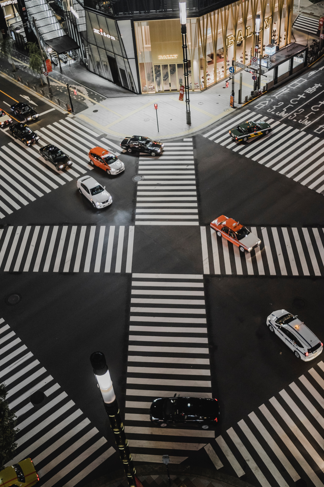
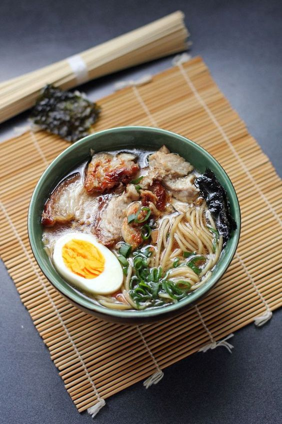

東京


cultivated
TOKYO
colourful
TOKYO
charming
TOKYO
 01
Five million people a year
01
Five million people a year
02
An annual increase in tourism
 03
Increase in visitor population
03
Increase in visitor population
お会あいできてうれしいです。
Tokyo is full of charms and promises a fun visit every time. Discover yet another new attraction in Tokyo.
-
 Night View
Night ViewLANDMARK
In addition, several skyscrapers house restaurants on their top floors from where diners can simultaneously enjoy good food and good views of the city.
-
 various of Tokyo
CITY
It is one of Japan's 47 prefectures, consisting of 23 central city wards and multiple cities, towns and villages west of the city center.
 Enjoy Taste foodFOOD
There is many things to do for all ages and all different types of food to satisfy. With many restaurants, shops, and hotels one could never be bored.